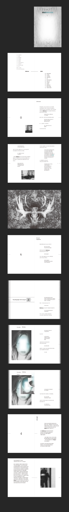

리틀 미스포춘
Little Misfortune
다크 판타지 게임 <리틀 미스포춘>은 해설자와 주인공 ‘미스포춘’의 대화와 해설자가 플레이어에게 건네는 몇 가지 말들로 진행된다. 본책은 주인공의 행동을 조종하는 게임 플레이어의 위치를 지운 채 오로지 해설자와 메인 캐릭터의 대화로 구성된다. 목차는 0부터 12까지의 숫자가 오름차순, 내림차순으로 두 파트를 나누어 내용의 시작인 0번은 집을 나서는 장면, 마지막 장의 0번은 다시 집으로 돌아오는 이야기로 자신이 죽은 줄도 모른 채 해설자의 말에 속아 결말이 정해진 게임을 반복하는 원작의 스토리를 강조하였다. 음울하고 기괴한 분위기, 미스포춘의 희망을 상징하는 파란 반짝이, 해설자의 영향력을 나타내는 글리치 효과 등 원작에서 사용된 장치를 재해석하여 디자인하였다. 별책은 주인공의 수호자 벤자민이 교육을 받는 기관을 다루어 본책의 내용을 뒷받침한다.
박정현 insta @imjen_ne


